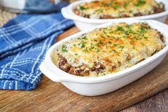

Doria (ドリア)

Doria is a standard popular menu item at Western restaurants. It’s a gratin-like dish with rice. In Japan, it is a dish made by pouring the white sauce over buttered rice or pilaf and grilling it over an open fire. It is similar to gratin but it is a savoury meat sauce over steamed rice, covered with melted cheese and baked in the oven.
Ingredients
- Minced Beef and Pork
- Mushrooms (boiled)
- Meat Sauce
- Cumin Powder
- Rice
- Cheese for Pizza
- Parsley
Steps
- Prepare the ingredients. Put the can of meat sauce, mixed minced meat, and mushrooms in a frying pan, and heat the minced meat while stirring so that it does not burn over medium heat. Add cumin and pepper and mix.
- Seasoning the dish and put rice. Put the rice in a heat-resistant container, add salted butter and salt and pepper and mix well. Then, spread them evenly.
- Bake the Doria. Sprinkle pizza cheese on it and bake in a non-preheated oven at 250°C for 13-14 minutes.
- Serving. Once it’s browned, sprinkle it with parsley and you’re done.